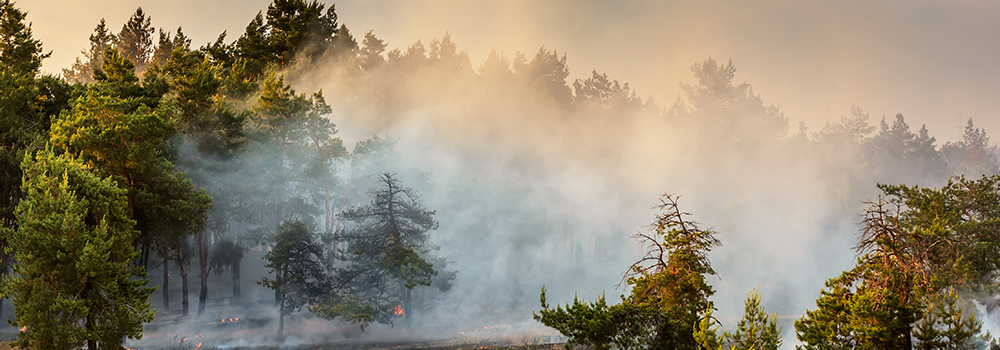
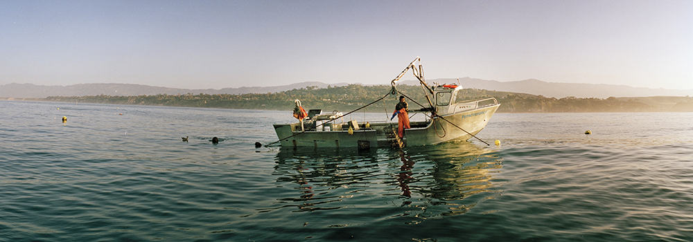

Mission
The PACE (Plankton, Aerosol, Cloud, ocean Ecosystem) mission is a significant scientific endeavor designed to study
ocean color, clouds, and aerosols. The mission is managed by a team at NASA’s Goddard Space Flight Center (GSFC), which is responsible for building and testing the spacecraft and instruments.
The primary instrument for PACE is the Ocean Color Instrument (OCI), designed to measure ocean color across a wide spectral range from ultraviolet to shortwave infrared. Two additional polarimeters, SPEXone and HARP2, are included to enhance data collection on cloud and aerosol interactions.
Key details of the mission include:
> Spacecraft dimensions : 1.5m x 1.5m x 3.2m, mass under 1700 kg
> Instruments : OCI, SPEXone, and HARP2
> Power : 1000 watts
> Communications : S-Band (command and telemetry) and Ka-Band (science data)
Together, OCI, SPEXone, and HARP2 provide a comprehensive view of the ocean-atmosphere system.They are expected to contribute to breakthroughs in ocean color studies, atmospheric correction,and aerosol-cloud science.
Mission Architecture
Instruments:
Ocean Color Instrument
The Ocean Color Instrument (OCI) on the PACE satellite measures sunlight reflecting off the ocean to study its color. This helps scientists learn about tiny ocean plants called phytoplankton and understand the ocean's role in Earth's climate. OCI uses advanced technology to capture clear, detailed images and avoid sun glare.
SPEXone Polarimeter
SPEXone is an instrument on the PACE satellite that studies tiny particles in the air, called aerosols, which affect the climate. It measures how sunlight reflects off Earth's atmosphere, land, and oceans to give scientists a better understanding of aerosols and their impact on climate change.
HARP2 Polarimeter
HARP2 is a tool that helps scientists study tiny particles in the air, like dust and clouds, by measuring how light interacts with them. It gathers detailed information about the size and shape of these particles to improve our understanding of weather, pollution, and climate. HARP2 is part of NASA's PACE mission.
Applications
The PACE Applications Program focuses on using satellite data to address specific environmental challenges in areas like air quality, wildfire monitoring, and ocean health. Some key applications include:
1. Air Quality Monitoring : PACE data, particularly from its polarimeters, will be used to track air pollutants like aerosols (dust, smoke, pollen). This is especially helpful for communities with limited ground air quality monitors. For example, researchers like Marcela Loría-Salazar will use PACE data to improve smoke forecasts and provide health alerts for air quality issues in underserved areas.

2. Wildfire Emissions Tracking : PACE will help monitor fine particulate matter released during wildfires. Its instruments, including the Ocean Color Instrument (OCI) and polarimeters (SPEXone and HARP2), will measure the height and concentration of wildfire-related aerosols, reducing uncertainty in how smoke spreads and impacts regional weather.

3. Ocean Health and Toxic Algae Monitoring : PACE will assist in predicting harmful algal blooms, like those producing domoic acid, a toxin dangerous to marine life and humans. For example, mussel farmer Bernard Friedman combines PACE’s ocean color data with toxin testing to forecast when shellfish may become dangerous due to algal blooms, helping protect public health and marine ecosystems.

The program aims to engage both experienced and new users of satellite data, encouraging them to apply PACE’s observations for practical, societal needs across air quality, climate, and marine research.
Click here to know more.